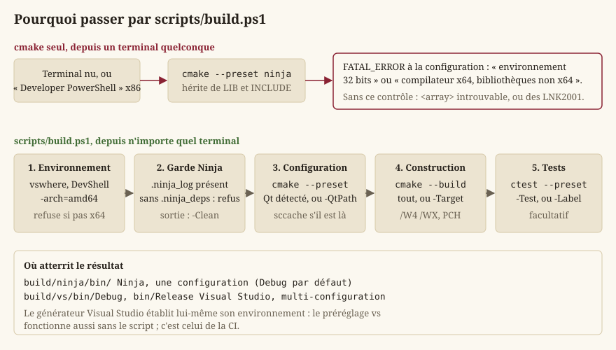
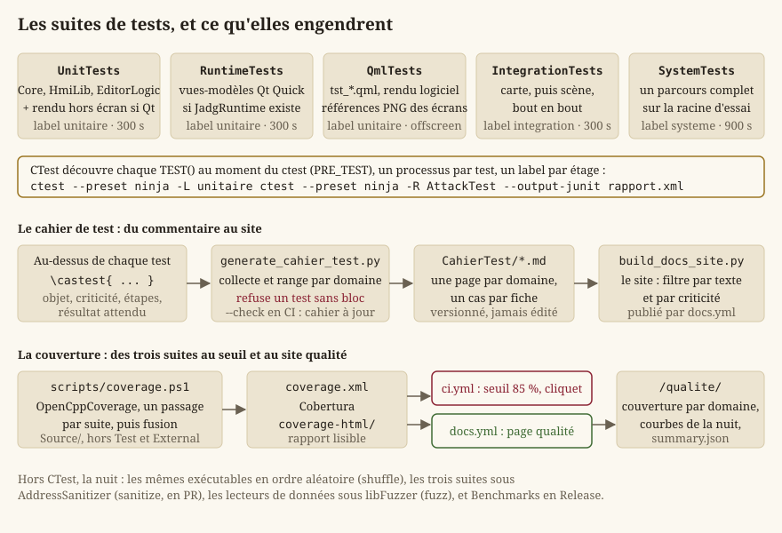
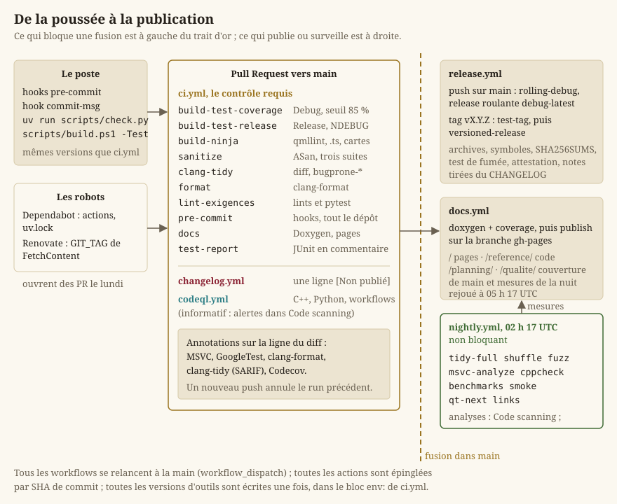
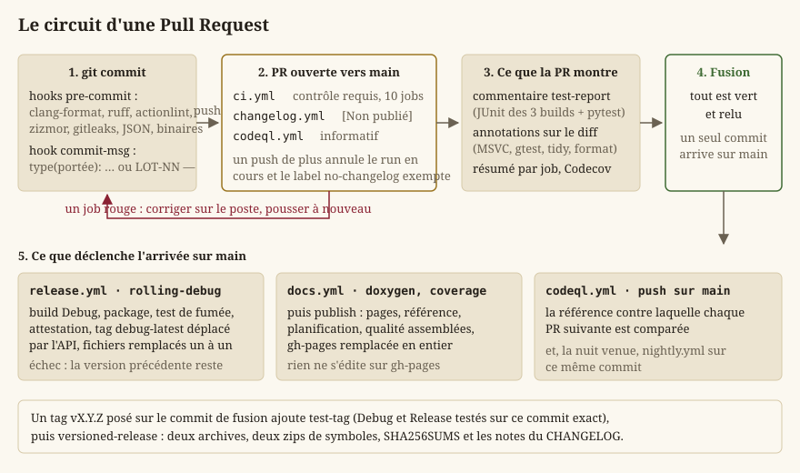

Build, tests et intégration continue
Cette page décrit tout ce qui construit, vérifie et publie le projet : la chaîne CMake et le script qui l'enveloppe, les suites de tests et le cahier qu'elles engendrent, la trentaine de scripts de contrôle, les six workflows de GitHub Actions et la page qualité qu'ils alimentent. Le fil conducteur de toute cette chaîne tient en une phrase, écrite en tête de ci.yml : un contrôle qui ne prédit pas le résultat local ne sert à rien. Chaque outil tourne donc à la même version sur le poste et sur le runner, chaque version est écrite une seule fois, et un contrôle qui n'a rien vérifié est un échec, pas un succès.
Les notions de base
Le lecteur connaît C++ ; pas forcément l'outillage d'un dépôt qui compile sous Windows avec Qt. Quelques définitions, dans l'ordre où la page s'en sert.
- Générateur CMake. CMake ne compile pas : il engendre les fichiers d'un système de construction. Deux sont utilisés ici : Ninja, mono-configuration (un dossier de build par configuration, une commande
ninjaqui parallélise seule), et Visual Studio 2022, multi-configuration (Debug et Release dans le même dossier, MSBuild aux commandes). Les deux générateurs ne se comportent pas pareil, et c'est pour cela que la CI construit avec les deux. - Préréglage CMake (preset). Un nom qui fixe en une fois le générateur, le dossier de build et les variables de cache, dans
CMakePresets.json.cmake --preset ninjaremplace une ligne de commande de six options ;cmake --build --preset ninjaetctest --preset ninjala prolongent pour construire et tester. - En-tête précompilé (PCH). Un fichier d'en-têtes lourds et stables (
Source/pch.h:<cstdint>,<memory>,<string>,<vector>), compilé une fois par cible et réutilisé par chacune de ses unités de compilation. Il accélère la construction mais rend le fichier objet dépendant du compilateur qui l'a produit : clang-tidy ne sait pas le lire, et sccache ne sait pas le rejouer. - Hook pre-commit. Un programme que git lance avant d'enregistrer un commit (
pre-commit) ou sur son message (commit-msg), et qui peut le refuser. Le dépôt les gère par l'outilpre-commit, dont.pre-commit-config.yamlliste les hooks. - Intégration continue (CI). Des machines louées (runners) qui rejouent construction, tests et contrôles à chaque Pull Request, sur un dépôt propre. Un contrôle requis est un workflow dont la protection de branche exige le vert avant la fusion ; les autres informent.
- SARIF. Un format JSON normalisé pour les résultats d'analyse statique. GitHub l'ingère dans Security > Code scanning et pose chaque diagnostic en annotation sur la ligne du diff. Les outils ne le produisent pas tous, ni sous une forme acceptée telle quelle : deux scripts le fabriquent ou le nettoient.
- Sanitizer. Une instrumentation du compilateur qui détecte à l'exécution ce qu'un test ne voit pas : AddressSanitizer (ASan) attrape une lecture hors bornes ou après libération.
- Fuzzing. Un harnais qui passe à une fonction des octets arbitraires, des millions de fois, en mutant ceux qui ouvrent un chemin de code nouveau. libFuzzer cherche l'entrée qui fait mentir un lecteur de données qui promet de ne jamais lever.
- Minidump. Un fichier
.dmpécrit au moment d'un plantage : la pile de chaque thread et le contexte de l'exception. Ouvert dans Visual Studio avec les symboles (.pdb) de la même version, il montre la ligne fautive. - Couverture. La part des lignes de
Source/exécutées au moins une fois pendant les tests. Elle se mesure sur un binaire Debug (les symboles disent quelle ligne est quelle instruction), et vaut comme cliquet : une chute est refusée, une hausse n'est pas exigée.
La chaîne de build locale
Les préréglages et les cibles
CMakePresets.json déclare quatre préréglages, chacun décliné en configuration, construction et test :
| Préréglage | Générateur | Dossier | Configuration |
|---|---|---|---|
ninja | Ninja | build/ninja/ | Debug, compile_commands.json exporté |
ninja-release | Ninja | build/ninja-release/ | Release |
vs | Visual Studio 17 2022, x64 | build/vs/ | Debug |
vs-release | même dossier que vs | build/vs/ | Release |
ninja est celui du poste ; vs est celui de la CI. Les préréglages Release servent à vérifier ce qui disparaît d'un binaire livré, où NDEBUG est défini : une variable lue seulement par une assertion devient inutilisée, et le /WX ci-dessous le refuse. Un tel défaut a déjà été découvert après un tag public ; le job build-test-release existe pour le découvrir en PR (EX-NFR-023).
Le CMakeLists.txt racine porte le project() (sa VERSION est la source unique du numéro de version : core::Engine::version la reçoit par définition de compilation, build_docs.py l'injecte dans Doxygen), le standard C++20 sans extensions, et les options :
| Option | Défaut | Effet |
|---|---|---|
BUILD_TESTING | ON | les cibles GoogleTest de Source/Test |
BUILD_EDITOR_QT | ON | le jeu et l'éditeur ; sans Qt, seuls les tests se construisent |
ENABLE_WARNINGS_AS_ERRORS | ON | /WX (-Werror) sur les cibles du projet |
ENABLE_PCH | ON | Source/pch.h précompilé pour Core, HmiLib, SceneComposition, EditorLogic, le jeu |
ENABLE_COMPILER_CACHE | ON | sccache comme lanceur de compilation, s'il est dans le PATH |
ENABLE_ASAN | OFF | AddressSanitizer, portée globale |
BUILD_FUZZERS | OFF | les cibles libFuzzer de Source/Fuzz (MSVC seulement) |
BUILD_BENCHMARKS | OFF | Benchmarks, les mesures de Source/Benchmark |
SKIP_MSVC_ENV_CHECK | OFF | outrepasser le contrôle d'environnement décrit plus bas |
Source/CMakeLists.txt enchaîne les modules dans l'ordre des dépendances : Core (sans Qt), HMI (HmiLib sans Qt, puis SceneComposition, l'éditeur LevelEditor en Widgets et JadgRuntime, les vues-modèles), Editor (EditorLogic), et, si Qt est trouvé, Ui (le module QML Jadg.Ui) et App (le jeu JustAnotherRpgGame). Trois modules QML, chacun déclaré dans le répertoire de ses fichiers : qt_add_qml_module calcule les chemins de ressource relativement au CMakeLists.txt appelant, et c'est cette plomberie mal placée qui avait coûté 125 commits à une branche abandonnée (LOT-86). Deux cibles engendrées méritent d'être connues : all_qmllint, qui vérifie statiquement tous les .qml des trois modules avec les bons chemins d'import, et update_translations, qui relit le code par lupdate pour mettre le catalogue .ts à jour (présente seulement si LinguistTools est installé).
Les avertissements : /W4 /WX, et seulement chez nous
Deux bibliothèques d'interface, project_warnings et project_options, portent les drapeaux transverses ; chaque cible du projet les lie, aucune dépendance ne les reçoit. Sous MSVC : /W4 /permissive- /external:anglebrackets /external:W0, plus /WX par défaut. La règle /external:anglebrackets traduit une convention du dépôt : un #include <...> est externe (STL, Qt, GoogleTest) et ne produit pas d'avertissement, un #include "..." est du projet et en produit. C'est ainsi que EX-NFR-013 (« compile sans avertissement ») tient sans qu'on relise jamais un avertissement de Qt.
Sous Visual Studio, /MP est ajouté globalement : MSBuild compile sinon les fichiers d'un projet un par un, et le préréglage vs prenait deux fois le temps du ninja. Pas de jobs dans les préréglages en plus : /m:N lancerait N projets ayant chacun autant de compilateurs que de cœurs.
Pourquoi passer par scripts/build.ps1
{kind=link}

Les générateurs Ninja et Makefiles n'établissent pas l'environnement MSVC : ils héritent des variables LIB et INCLUDE du terminal qui les appelle. Or une invite « Developer PowerShell » démarre en x86. Deux incohérences en découlent, toutes deux silencieuses jusqu'à l'édition de liens : un terminal x86 fait choisir un compilateur 32 bits, et la construction, cohérente, n'atteint jamais Qt (msvc*_64), donc ne produit aucun exécutable ; un compilateur x64 imposé par le cache d'un IDE avec une LIB x86 échoue sur des centaines de LNK2001 sans rapport apparent avec la cause.
Le CMakeLists.txt racine détecte l'incohérence à la configuration, seul endroit où le message peut être compris : CMAKE_SIZEOF_VOID_P doit valoir 8, et LIB doit contenir un chemin lib/x64. Sinon, FATAL_ERROR, avec la marche à suivre. Le générateur Visual Studio est exempt (MSBuild établit son propre environnement), et -DSKIP_MSVC_ENV_CHECK=ON outrepasse.
scripts/build.ps1 supprime le problème plutôt que de le signaler : il entre lui-même dans l'environnement x64 avant d'appeler CMake, et fonctionne donc depuis n'importe quel terminal, y compris un PowerShell nu. Ses étapes :
- Environnement.
Enter-X64Environmentlocalise Visual Studio parvswhere.exe, présent à un emplacement fixe sur tout poste qui l'a (aucun chemin de machine codé en dur), importe le module DevShell et entre en-arch=amd64. SiVSCMD_ARG_TGT_ARCHvaut déjàx64, rien à faire ; s'il ne bascule pas, le script s'arrête. - Garde Ninja.
Assert-NinjaDepsIntact: voir la section suivante. - Kits d'assets, puis configuration.
py -3 scripts/fetch_assets.pyinstalle d'abord les images que Git ne suit plus (LOT-108, les kits d'assets) : CMake globeUI/etMaps/à la configuration et refuse de configurer sans le témoin de chaque kit du verrou, avec la commande à lancer (-DSKIP_ASSET_KITS_CHECK=ONoutrepasse). Puiscmake --preset <préréglage>;-QtPathposeCMAKE_PREFIX_PATHquand la détection automatique ne trouve pas Qt. - Construction.
cmake --build --preset, tout ou-Target <cible>(par exemple-Target JustAnotherRpgGame_qmllint, ou-Target LevelEditor). - Tests, facultatifs.
-Testlance tout CTest ;-Label unitaire|integration|systemene lance qu'un étage, pour la boucle de développement.
-Clean supprime le dossier de build avant de configurer. Le script termine en affichant le chemin de l'exécutable, ou un avertissement s'il manque : c'est la panne muette que toute la chaîne s'attache à rendre visible.
Astuce — Le poste exécute Windows PowerShell 5.1 :
powershell -File scripts/build.ps1 -Preset ninja -Test. Sous pwsh 7,pwsh scripts/build.ps1fonctionne aussi ; le lint PSScriptAnalyzer garantit qu'aucune syntaxe propre à la 7 ne s'y glisse.
La garde .ninja_deps
Ninja n'apprend les en-têtes qu'un fichier inclut qu'en le compilant, et les garde dans .ninja_deps. Si ce journal est perdu (recompaction refusée, construction interrompue, disque plein), une modification d'en-tête ne recompile plus ses consommateurs : des objets compilés contre deux versions d'une même structure se lient ensemble, et le binaire corrompt sa pile au premier appel, sans que rien ne l'annonce. Le symptôme observé ressemblait à une assertion de la CRT dans std::string_view, et a coûté une journée avant d'être élucidé.
Assert-NinjaDepsIntact regarde le signe qui trahit cet état : un .ninja_log (des objets déjà construits) sans .ninja_deps à côté, ou vide. Elle refuse alors de construire et demande -Clean. Un dossier vierge passe : la première compilation écrira les deux.
Le cache de compilation et le PCH
Dès que sccache est dans le PATH, le CMake racine le pose en CMAKE_CXX_COMPILER_LAUNCHER (hors Visual Studio, qui ignore les lanceurs), et passe MSVC de /Zi à /Z7 : /Zi écrit tous les objets d'une cible dans un même .pdb, ce qu'aucun cache ne sait rejouer. Mesuré sur le préréglage ninja : 487 s à froid, 247 s cache plein. Les fichiers compilés sous PCH ne sont pas cachables ; les autres (tests, dépendances) le sont.
Une limite réelle : avec un MSVC en français, le cache n'est pas activé. Ninja retrouve les en-têtes inclus en filtrant /showIncludes par un préfixe détecté par CMake, qui contient en français des espaces insécables ; sccache 0.18 les supprime sur une compilation cachée et les laisse sur une autre, aucun préfixe ne filtre les deux, et Ninja perdait des dépendances d'en-têtes (constaté par ninja -t deps). Le CMake le dit en STATUS et propose VSLANG=1033 avec le module linguistique anglais. Les runners ont un MSVC anglais.
Qt : trouvé sans configuration, épinglé, vérifié
find_package(Qt6) ne consulte que CMAKE_PREFIX_PATH, et l'installateur officiel range Qt sous <racine>/<version>/<compilateur>, un emplacement que CMake ignore. Sur un poste neuf, la configuration ne trouvait rien et la cible était ignorée en silence. Source/CMakeLists.txt complète donc la recherche : QT_ROOT_DIR (exporté par la CI), Qt6_ROOT, QTDIR, puis C:/Qt/*/msvc*_64 et D:/Qt/*/msvc*_64 triés en ordre naturel décroissant, ajoutés en fin de liste pour qu'un choix explicite garde la priorité. Trois cas d'échec sont distingués parce qu'ils envoient chercher à trois endroits différents : rien d'installé, une version trop ancienne, ou un module manquant (Multimedia, ShaderTools, GuiPrivate sont exigés, et l'installateur ne les coche pas par défaut). Chacun est un WARNING, pas un STATUS : sans Qt, il n'y a aucun exécutable.
QT_VERSION_MINIMUM (6.11.2) est le seul endroit du CMake où la version de Qt s'écrit ; ci.yml, release.yml, nightly.yml et docs.yml installent Qt à env.QT_VERSION, et check_qt_version_pin.py exige que toutes ces écritures coïncident (EX-BUILD-010). Une version voisine trouvée sur le poste construit, mais avec un avertissement : le but est qu'un écart soit visible, pas interdit.
Un détail de construction qui a fait rougir la CI deux fois (LOT-15, LOT-22) : le jeu et l'éditeur déploient chacun, en POST_BUILD, les DLL Qt et le runtime MSVC dans le même bin/. Sous Ninja, les deux éditions de liens tournent en parallèle et l'une ouvre MSVCP140D.dll pendant que l'autre la copie. Une réserve JOB_POOLS deploiement_qt=1 sérialise les deux déploiements, et rien d'autre.
Installer le poste : scripts/setup_dev.ps1
scripts/setup_dev.ps1 ne porte aucune version. Il lit le bloc env: de ci.yml (LLVM_VERSION, DOXYGEN_VERSION, OPENCPPCOVERAGE_VERSION, UV_VERSION, PSSCRIPTANALYZER_VERSION, SCCACHE_VERSION, PRE_COMMIT_VERSION, QT_VERSION) et compare ce qui est installé à ce que le runner installe. Sans paramètre, il affiche un tableau (outil, version attendue, trouvée, verdict) et échoue sur un écart. Avec -Install (compatible -WhatIf), il installe ce qui diverge : winget pour LLVM, Doxygen et OpenCppCoverage ; l'archive officielle pour sccache ; pip par le lanceur py pour pre-commit, clang-format et uv ; le zip de la PowerShell Gallery pour PSScriptAnalyzer, sans Install-Module (qui exige sous 5.1 le fournisseur NuGet). Puis uv sync --locked crée .venv/ aux versions de uv.lock, et pre-commit install pose les hooks dans le clone courant : chaque worktree a son propre .git/hooks effectif. Visual Studio et Qt sont vérifiés, jamais installés. Enfin il appelle scripts/fetch_assets.py : les images des kits d'assets (LOT-108) viennent d'archives publiées, téléchargées d'après Source/Elements/Assets/kits.lock.json dans un cache partagé par les clones et les worktrees du poste (%LOCALAPPDATA%\JadgAssets) — sans elles, CMake refuse de configurer (les kits d'assets).
Attention —
pythondu PATH peut être n'importe quoi (celui d'Inkscape ou de GIMP s'y glisse souvent) : le script n'installe jamais avec lui et l'avertit. Les scripts du dépôt se lancent avecpy -3 scripts/…ou, mieux,uv run scripts/…, qui garantit l'environnement deuv.lock.
Les suites de tests
{kind=link}

Cinq exécutables, trois étages
Source/Test/CMakeLists.txt déclare :
| Cible | Ce qu'elle lie | Étage (label) | Délai |
|---|---|---|---|
UnitTests | Core, HmiLib, EditorLogic ; plus, si Qt est là, les rendus hors écran (ArenaSceneRenderer, WorldSceneRenderer, ScenePainter, MapRender) et l'audio | unitaire | 300 s |
RuntimeTests | JadgRuntime, les vues-modèles Qt Quick ; existe seulement si la cible existe | unitaire | 300 s |
QmlTests | JadgUi + Qt6::QuickTest ; les tst_*.qml de Source/Test/Qml | unitaire | 300 s |
IntegrationTests | HmiLib ; une carte devient une scène, bout en bout | integration | 300 s |
SystemTests | Core ; un parcours d'édition et de règles complet | systeme | 900 s |
L'arborescence des tests unitaires reflète celle des sources : le test de Source/<Module>/<X> vit sous Unit/<Module>/test_<x>.cpp. Depuis la table rase du LOT-102, les tests qui lisaient les cartes et assets livrés lisent la racine d'essai Source/Test/Fixtures/GameData (JADG_TEST_DATA_DIR, LOT-123) : trois cartes reliées, une planche de lieu, un kit d'arène, des figurines, un dialogue, une rencontre. Elle ne prouve pas du contenu, mais des mécanismes. Les catalogues de règles, eux, restent lus en vrai (JADG_RPG_RULES_DIR, JADG_WORLD_DIR…) : une copie divergerait, et un test sur une copie cesse de prouver quoi que ce soit le jour où il compte.
Chaque exécutable inclut Support/CrtReports.cpp : les assertions de la CRT vont sur stderr, jamais dans une boîte modale ; sans lui, un test qui en lève une attend un clic, sur le poste comme en CI.
gtest_discover_tests enregistre chaque TEST() auprès de CTest en DISCOVERY_MODE PRE_TEST : la découverte a lieu au ctest, pas en fin de build. En mode POST_BUILD, Ninja exécutait l'exécutable de test dans la même fenêtre que le windeployqt du jeu, les deux visant bin/, et le lancement tombait en STATUS_SHARING_VIOLATION sans rapport avec le code (LOT-02). Le TIMEOUT est une borne de terminaison, pas un objectif : il n'attrape qu'un emballement.
Lancer une suite
powershell -File scripts/build.ps1 -Label unitaire # construire, puis un seul étage
ctest --preset ninja # tout
ctest --preset ninja -L integration # par label
ctest --preset ninja -R AttackTest # par nom (regex)
ctest --preset ninja -E 'Trainer|Comparator' # tout sauf les lents
build/ninja/bin/UnitTests.exe --gtest_filter='TileMap*' # GoogleTest en directCTest lance un processus par test : l'ordre n'y joue pas. C'est justement pour cela que la nuit rejoue chaque exécutable entier en ordre aléatoire (--gtest_shuffle --gtest_repeat=3, job shuffle) : un test qui ne passe que parce que le précédent a préparé quelque chose est une bombe à retardement, et CTest ne la voit pas.
Les tests Qt Quick et leurs références PNG
QmlTests est le seul exécutable hors bin/ (build/<préréglage>/qmltests/) : windeployqt y dépose les modules du jeu, sans QtTest ; depuis son propre dossier, l'exécutable charge tout Qt depuis l'installation. Il tourne en -platform offscreen et lit ses tst_*.qml dans les sources : en ajouter un ne demande pas de reconstruire. QmlTestSetup.cpp fournit deux services au QML : jadgUiFiles, chaque .ui.qml du module lu dans sa ressource (un écran ajouté est testé sans être déclaré), et referenceImages.compare(fichier, nom).
Trois fichiers : tst_ui_files_load.qml (chaque formulaire se construit sans avertissement), tst_ornate_controls.qml (les briques se comportent comme la galerie le suppose), et tst_screen_references.qml, la non-régression visuelle : chaque écran est rendu à 960 × 540 (échelle 0,5 de la conception 1080p) et comparé à Source/Test/Qml/References/<Écran>.png. Le rendu logiciel est imposé : une capture GPU dépend du pilote, et le poste et le runner (WARP) ne produiraient pas les mêmes pixels ; le moteur logiciel de Qt Quick rastérise par QPainter, identique partout à version de Qt égale. Seul le lissage des polices peut varier d'un pixel, d'où la tolérance (24 par composante, 0,2 % des pixels). Sur écart, la capture et une image des différences sont écrites dans build/<préréglage>/qml-captures/, que la CI conserve en artefact. Une modification voulue d'un écran se valide en régénérant sa référence (JADG_UPDATE_REFERENCES=1, puis ctest -R QmlTests) et en relisant l'image dans le diff de la PR.
Le cahier de test, engendré
Le cahier de test (Documentation/CahierTest/) ne s'écrit pas. Chaque test porte au-dessus de lui un bloc de commentaire Doxygen \castest{…} : l'objet en gras, la catégorie (\tcat), la criticité (\tcrit, de Bloquant à Mineur), les étapes (\tetapes) et le résultat attendu (\tattendu). scripts/docs/generate_cahier_test.py les collecte et les range : une page par domaine de Source/Test/ (core-combat.md, hmi-graphics.md, integration.md…), un cas par fiche avec son identifiant GoogleTest (Suite.Nom, celui que ctest imprime) et son emplacement fichier:ligne, et un README.md de synthèse par domaine et par criticité. Le site rend ces pages et les filtre par texte et par criticité.
Deux refus, dans les deux modes : un test du dépôt sans bloc (sans ce contrôle, un test jamais documenté n'apparaîtrait d'aucun côté de la comparaison, qui le validerait en silence), et, en --check (CI), un dossier qui n'est plus à jour des blocs. Corriger le commentaire du test, relancer le script, commiter le résultat.
La couverture : scripts/coverage.ps1
OpenCppCoverage n'accepte qu'un exécutable par invocation. Le rapport ne mesurait longtemps que UnitTests, un chiffre faux par construction. scripts/coverage.ps1 exporte chaque suite (UnitTests, IntegrationTests, SystemTests) au format binaire intermédiaire, puis fusionne les trois en un coverage.xml (Cobertura) et un coverage-html/, sur Source/ hors Source/Test et External. Une seule définition sert la CI (job build-test-coverage, qui applique le seuil), le site qualité (docs.yml, qui publie le HTML) et le poste :
powershell -File scripts/coverage.ps1 -BinDir build/vs/bin/Debug -OutDir coverageLe seuil, COVERAGE_THRESHOLD_PERCENT: 85 dans ci.yml, est un cliquet (EX-NFR-022) : mesuré à 93,66 % le jour où il fut posé, calé avec une marge explicite pour absorber l'écart entre le poste et le runner. Codecov, alimenté par OIDC sans secret, montre en plus la couverture des seules lignes ajoutées par la PR ; ses statuts sont informatifs (codecov.yml), pour qu'aucun seuil ne soit écrit à deux endroits.
Sanitizer, fuzzing, mesures, plantage volontaire
- AddressSanitizer (
ENABLE_ASAN=ON) instrumente globalement : sous MSVC,/fsanitize=addressannote les conteneurs de la STL, et l'éditeur de liens exige que tous les objets d'un binaire partagent la même instrumentation (LNK2038sinon), GoogleTest compris, qui vient deFetchContentet ne lie pasproject_options. Le jobsanitizeconstruit et exécute les trois suites sans Qt ; c'est ce qui rendEX-NFR-003vérifiable. - libFuzzer (
Source/Fuzz/CMakeLists.txt,BUILD_FUZZERS=ON) : quatre cibles,fuzz_json,fuzz_level,fuzz_dialogue,fuzz_localization, avec le compilateur MSVC lui-même (/fsanitize=fuzzer, ASan, couverture de branches sur toutes nos cibles, sinon le fuzzer ne mute pas ce dont il ne voit pas les branches). clang-cl a été essayé et écarté : sous son ASan, lecatchd'une exception recevait un objet invalide, et chaque lecteur « plantait » sur l'entrée vide. Chaque cible part d'amorces réelles (<cible>.seeds: les JSON des fixtures, les cartes livrées et une carte de chaque version passée, les dialogues, les catalogues de langue), et la DLL d'ASan est copiée à côté de l'exécutable pour qu'il se lance depuis n'importe quel shell. Une entrée fautive se rejoue parfuzz_<cible>.exe <fichier>. - Benchmarks (
Source/Benchmark/CMakeLists.txt,BUILD_BENCHMARKS=ON, Release obligatoire) : déplacement, ligne de vue, IA, chargement de niveau et composition d'un lieu, dont le coût peut doubler sans qu'aucun test ne rougisse. --crash-test: le jeu (et l'éditeur, après sa première sauvegarde) plante volontairement. C'est ce que lance le test de fumée d'une archive pour prouver que le filtre d'exception est installé et qu'un minidump s'écrit sousCrashes/(hmi::crashDumpFileNameen donne le nom, version comprise, pour retrouver l'archive de symboles qui le lit). L'écriture tente quatre dumps de plus en plus réduits : une pile illisible d'un autre thread fait échouer tout le dump, la dernière tentative n'écrit que le thread du plantage et se réessaie, l'échec vu en CI étant un aléa (ERROR_PARTIAL_COPY), pas un refus stable. Voir Journalisation et assertions etEX-NFR-042.
Les scripts de contrôle
Un contrôle, un script, un refus
scripts/ se range par usage : à la racine, les points d'entrée du poste (build.ps1, setup_dev.ps1, coverage.ps1, check.py) ; checks/, les contrôles du contenu ; ci/, ce que seule la chaîne d'intégration appelle (résumés, SARIF, épinglages, message de commit, changelog) ; docs/, la documentation et le site ; release/, les archives publiées ; assetsGeneration/, la production et l'installation des assets ; i18n/, les traductions ; sourcebook/, l'extraction du corpus. Un script à usage unique ne s'y garde pas : il se supprime une fois son travail fait.
Les contrôles vivent dans scripts/checks/ et scripts/ci/ ; le job lint-exigences les enchaîne, et check.py les rejoue sur le poste. La colonne « Refuse » dit ce qui fait passer le code de sortie à 1.
| Script | Refuse | Où il tourne |
|---|---|---|
lint_exigences.py | une EX- déclarée deux fois, citée nulle part, citée sans être déclarée, une citation dont la famille n'est déclarée nulle part, une exigence retirée encore citée par le code | CI, poste |
Documentation/outils/lint_docs.py | une commande Doxygen dans une page, un lien ou une ancre morts, une page orpheline, un LOT- cité inexistant | CI, poste |
Planning/outils/lint_planning.py | une fiche de lot illisible, un prérequis inconnu ou cyclique, un lot livré avant ses prérequis, une maquette ou un lien qui ne mène nulle part | CI, poste |
generate_cahier_test.py --check | un test sans bloc \castest, un cahier périmé | CI, poste |
check_qt_version_pin.py | QT_VERSION_MINIMUM différent d'un env.QT_VERSION d'un workflow | CI, poste |
check_tool_pins.py | clang-format, Doxygen, LLVM, sccache, aqtinstall ou OpenCppCoverage épinglés à deux versions selon le fichier | CI, poste |
check_ui_layers.py | Qt Quick ou Widgets dans les vues-modèles, Qt dans Core, du code impératif dans un .ui.qml, une couleur ou une taille en dur hors Source/Ui/Theme, un relevé vide | CI, poste |
check_qml_designer_compat.py | un formulaire qui nomme un type C++ ou importe Jadg.Runtime, un type exposé sans doublure, un jumeau sans formulaire, un alias de ressource, une dépendance QML circulaire | CI, poste |
check_translations.py | une traduction inachevée, disparue, aux marqueurs %1 différents, à l'espace de bord perdu | CI (deux fois), poste |
check_glossary.py | un lexique mal formé, une clé de règle hors lexique, un corpus non ignoré par git, un auto-test qui échoue | CI, poste |
check_corpus_manifest.py | un manifeste corpus.toml mal formé (jamais les empreintes : les PDF ne sont pas sur le runner, EX-CNT-023) | CI, poste |
check_rpg_data.py | un schéma invalide, un catalogue hors schéma (fichier et ligne, EX-CNT-010), une énumération fermée qui diverge du lexique, une fixture mal classée | CI, poste |
check_assets_brief.py | un jeton absent de Tokens.qml, une clé en double, des marges 9-patch sans milieu, une zone hors maquette, une page .md périmée | CI, poste |
check_ui_assets.py | une illustration d'une provenance autre que produced (EX-IHM-076), retouchée sans manifeste, orpheline, citée par le QML sans exister | CI, poste |
check_map_assets.py | une carte hors manifeste ou hors 1920 × 1080, une provenance autre qu'author, une région sans carte, un lieu inconnu de l'atlas | CI, poste |
check_asset_keys.py | une clé d'asset orpheline ou malformée (EX-CNT-040) ; liste sans échouer les clés encore servies par un marqueur (EX-CNT-041) | CI, poste |
check_powershell.py | une règle PSScriptAnalyzer (erreur ou avertissement, dont la syntaxe pwsh 7), une autre version du module que celle de ci.yml | CI, poste |
check_binary_files.py | un fichier au-delà de la taille maximale, un binaire dont l'extension n'est pas déclarée binary dans .gitattributes | hook, CI (--all) |
check_json_files.py | un JSON invalide, une clé en double, un BOM, un retour à la ligne final absent | hook, CI (--all) |
check_commit_message.py | un sujet qui n'est ni type(portée): … ni LOT-NN — … (fusion, Revert, fixup! admis) | hook commit-msg |
check_changelog.py | une PR sans ligne ajoutée sous ## [Non publié] | changelog.yml |
Plusieurs de ces scripts s'auto-testent avant de se prononcer (--auto-test, ou un jeu de fixtures rejoué à chaque appel). La raison est une panne réelle, celle du LOT-78 : une règle de lint contenait un caractère invisible qui l'empêchait de jamais correspondre, et le contrôle était vert parce qu'il ne lisait rien. Un contrôle sans entrée est vert par vacuité ; ceux du dépôt traitent un relevé vide comme un échec. scripts/tests/test_auto_tests.py rejoue ces auto-tests comme des tests nommés, pour qu'ils comptent dans le rapport de la PR.
scripts/check.py : la CI sur le poste, sans liste à tenir
scripts/check.py ne porte pas sa propre liste de contrôles : il lit les étapes du job lint-exigences dans ci.yml et exécute chaque run: python3 scripts/…, python3 Planning/outils/… et python3 -m pytest avec l'interpréteur courant. Un contrôle ajouté à la CI est rejoué sur le poste sans qu'on y pense, et les deux ne peuvent pas diverger. Il lance ensuite pre-commit run --all-files s'il est installé (--sans-hooks pour l'éviter). Tous les contrôles s'exécutent même après un échec, comme en CI, et un tableau final donne le verdict de chacun. Il avertit, sans imposer, quand l'interpréteur n'est pas celui de .venv/ ou quand la version de pre-commit diffère de PRE_COMMIT_VERSION : un verdict obtenu avec un autre jsonschema ne prédit pas celui de la CI. --auto-test vérifie seulement la lecture de ci.yml, avec un plancher (au moins dix contrôles lus) contre la vacuité.
Ce qu'il ne rejoue pas : les builds, les tests, clang-tidy, la documentation. Ils demandent MSVC, Qt, LLVM ou Doxygen, et passent par build.ps1 et build_docs.py.
Les épinglages : Qt et les outils
Deux écritures d'un même fait finissent par diverger sans que rien ne le signale. Le numéro de version a divergé pendant quatre jalons entre le Doxyfile et CMake, avant que build_docs.py ne lise project(). check_qt_version_pin.py ferme le même défaut pour Qt (QT_VERSION_MINIMUM contre env.QT_VERSION de chaque workflow) et check_tool_pins.py pour les outils : clang-format dans ci.yml et dans le tag mirrors-clang-format des hooks (deux versions majeures ne formatent pas pareil : le hook reformaterait un fichier que la CI refuse), Doxygen entre ci.yml et docs.yml, LLVM et sccache entre ci.yml et nightly.yml, aqtinstall et OpenCppCoverage partout où ils apparaissent.
Les traductions, vérifiées deux fois
Les écrans écrivent leurs textes en français dans le QML (qsTr("Nouvelle partie")) et jadg_en.ts en porte la traduction ; lupdate ajoute une chaîne nouvelle en unfinished, lrelease la compile quand même, et le jeu en anglais affichait du français sans que personne ne le voie. check_translations.py tourne sur le catalogue versionné (job lint-exigences, sans Qt), puis, dans build-ninja, après --target update_translations : lupdate a relu le code, donc une chaîne nouvelle y apparaît inachevée. Seul ce second passage prouve que le catalogue est à jour du code. Le .ts réécrit sur le runner n'est pas poussé : c'est au poste de le mettre à jour et de le traduire.
La séparation conception / code
check_ui_layers.py et check_qml_designer_compat.py gardent ce que le LOT-86 et le LOT-87 ont séparé : ce qu'un artiste modifie (Source/Ui, en QML déclaratif) de ce qu'un développeur écrit (Source/HMI, Source/App/Game/Qml). Cette séparation se perd par de petits gestes défendables un à un : un include de Quick « juste » pour lire une propriété, une couleur en dur « le temps d'essayer ». Le dépôt a payé ce prix : le plancher de taille des écrans corrigé trois fois, la palette écrite deux fois sans que rien ne relie les copies. Une règle qui n'est pas vérifiée est une intention (EX-IHM-100). Le second script vérifie un contrat avec Qt Design Studio, pas une structure CMake : tout ce qu'un formulaire nomme doit se résoudre sans le jeu (modules Qt, Jadg.Ui, ou les doublures de Source/Ui/Mocks/), et chaque Q_PROPERTY d'un type C++ exposé a son pendant dans sa doublure. Voir Concevoir les écrans dans Qt Design Studio.
Les hooks pre-commit
.pre-commit-config.yaml est la moitié poste de ci.yml : les mêmes outils, aux mêmes versions, avant le commit et dans le job pre-commit. La CI confirme ; elle ne découvre plus. Chaque dépôt de hook est épinglé par SHA de commit, le tag en commentaire, comme les actions : un tag se réécrit, un commit non (pre-commit autoupdate --freeze les monte).
| Hook | Étape | Ce qu'il attrape |
|---|---|---|
check-merge-conflict, check-case-conflict, check-yaml | pre-commit | un <<<<<<< oublié, deux chemins qui ne diffèrent que par la casse (un seul survit sur Windows) |
clang-format (v20.1.8, Source/**.cpp,h) | pre-commit | reformate ; le commit s'arrête pour que la correction soit relue |
ruff-check (ruff.toml : E4, E7, E9, F, B) | pre-commit | un import mort, un nom indéfini, un argument par défaut mutable |
actionlint (+ shellcheck embarqué) | pre-commit | une expression de workflow mal formée, un needs inconnu, un run: douteux |
zizmor (.github/zizmor.yml) | pre-commit | une injection ${{ }} dans un run, des droits trop larges, une action non épinglée |
gitleaks | pre-commit | un jeton ou une clé dans les fichiers indexés (poste seulement) |
check-json-files, check-binary-files | pre-commit | voir le tableau des scripts |
check-commit-message | commit-msg | le format du sujet |
Trois hooks ont été écartés avec leur raison écrite dans le fichier : ruff-format (10 000 lignes réécrites sans rien corriger), qmlformat (Qt 6.11 dé-indente les blocs de documentation et éclate les Component sur 55 fichiers), pretty-format-json (les JSON écrits à la main gardent leurs tableaux sur une ligne). Contourner une fois : git commit --no-verify ; le job pre-commit rattrape alors sur tout le dépôt.
L'environnement Python : pyproject.toml, uv, pytest
Les scripts ne sont pas un paquet ; pyproject.toml ne sert qu'à épingler leurs dépendances (jsonschema, pytest, pillow, numpy, versions exactes) et uv.lock à les figer. uv sync --locked crée .venv/ à l'identique sur le poste et sur le runner ; uv lui-même est épinglé par UV_VERSION dans ci.yml, et Dependabot (écosystème uv) propose les montées. pytest cherche ses tests dans scripts/tests, Planning/outils/tests et Documentation/outils/tests, avec scripts/ sur le chemin d'import : un test importe check_json_files comme le fait un script voisin, et aucun script n'agit à l'import. Les tests couvrent les convertisseurs SARIF (qui ne tournent que sur une PR C++ ou la nuit, et casseraient en silence), les hooks, la lecture de ci.yml par check.py, chaque fixture des catalogues RPG, la géométrie de la maquette HD, le site qualité, et le motif de Renovate. Leur rapport JUnit rejoint ceux des builds dans le job test-report.
Les outils de production, hors CI
Quelques scripts ne contrôlent rien : ils fabriquent, sur le poste.
fetch_assets.pyetpublish_asset_kit.py(LOT-108) sont les deux bouts du cycle des kits d'assets : le premier installe les images que Git ne suit plus, d'après le verroukits.lock.json—setup_dev.ps1etbuild.ps1l'appellent, et CMake refuse de configurer sans les témoins qu'il laisse ; le second publie une retouche en archive numérotée immuable sur la release de sa région et réécrit le verrou. Le cycle entier, avec ses contrôles, est dans les kits d'assets.build_docs.py: Doxygen se place dansDocumentation/(ses chemins sont relatifs au répertoire courant, pas auDoxyfile), lit laVERSIONduproject()et l'injecte enPROJECT_NUMBERpar l'entrée standard.WARN_AS_ERROR = FAIL_ON_WARNINGS: un@paramoublié fait échouer la commande, en local comme en CI.build_hd_mockup.py(LOT-101) monte la maquette de validation du standard 2D HD, huit cases sur huit à 1080p et 2160p, depuis une planche de référence queTools/ne versionne pas ;--checkvérifie que les images sont à jour, et le test associé n'éprouve que la géométrie et le détourage, sur une planche synthétique.receive_ui_assets.py(LOT-87) réceptionne les images produites pour la charte v2 : clé du cahier, dimensions, canal alpha vérifiés, puis installation sousAssets/UI/, entréeprovenance: "produced"dansillustrations.json, tableArtwork.qmlréécrite. Ce qu'il ne juge pas (lettres incrustées, matière) reste une relecture humaine.seed_translations.py(LOT-86) : outil de migration, appelé une fois, qui a amorcéjadg_en.tsdepuisen.langsans rien deviner.list_pending_bindings.py(LOT-86) relève dans le QML les champs des écrans dessinés avant leurs données (ancrehmi::PendingData) : un inventaire dérivé, jamais une liste à tenir.
Les workflows, job par job
{kind=link}

Six workflows sous .github/workflows/. Tous se relancent à la main (workflow_dispatch), tous démarrent avec un jeton en lecture seule et n'accordent l'écriture qu'au job qui publie, toutes les actions sont épinglées par SHA. Les versions d'outils sont écrites une fois, dans le bloc env: de ci.yml, et recopiées ailleurs sous le contrôle de check_tool_pins.py. Les jobs Windows qui utilisent Ninja appellent vcvars64.bat par vswhere dans le même processus cmd que CMake : l'effet d'un script d'environnement ne survit pas d'une étape à l'autre.
ci.yml : le contrôle requis, sur chaque PR
Dix jobs, tous sur pull_request vers main. Un nouveau push sur la branche annule le run précédent (groupe de concurrence) au lieu d'occuper trois runners Windows.
build-test-coverage(windows-2022, 60 min). D'abord les kits d'assets par l'action compositefetch-assets(LOT-108) — les archives, mises en cache d'Actions sous une clé qui est l'empreinte dekits.lock.json, sont installées puis vérifiées parfetch_assets.py --check, avant toute lecture des assets ; c'est la même action que reprennent tous les jobs qui construisent ou contrôlent des assets, dansci.ymlcomme dansrelease.ymletdocs.yml. Puis Qt par l'action compositesetup-qt(unique définition des modules :qtmultimedia,qtshadertools,qtcanvaspainter),cmake --preset vs, build,ctest --output-junit, puis deux contrôles de panne muette : l'exécutable existe, etQt6Multimediad.dlla été déployée (windeployqt ne la dépose que s'il détecte l'usage réel). Ensuitecoverage.ps1, le seuil, l'envoi à Codecov, etci_summary.py. Un problem matcher met chaque avertissement MSVC et chaque assertion GoogleTest en annotation sur la ligne du diff.build-test-release. Le même préréglage en Release, testé (EX-NFR-023).build-ninja. Le préréglageninja, qui hérite de l'environnement du terminal et avait silencieusement cessé de fonctionner faute d'être couvert ; sccache par le cache GitHub Actions. Puisall_qmllint(EX-IHM-100),update_translationssuivi decheck_translations.py, l'existence du jeu et deLevelEditor.exe,LevelEditor --checksur toutes les cartes livrées (LOT-EDITOR-12: version 4, écriture canonique octet pour octet, références, pièces au manifeste, collision égale à la déduction) et, sur une PR,LevelEditor --renderdes cartes que la PR change, publiées en artefactmap-renders(LOT-EDITOR-13) : une image dit d'un coup d'œil ce qu'un diff de JSON cache.sanitize.ENABLE_ASAN=ON, sans Qt, les trois suites exécutées dans la même étape quevcvars64.bat: le dossier de la DLL runtime d'ASan vient de son PATH.clang-tidy. Ninja sans PCH (le.pchde MSVC n'est pas lisible par clang), un build complet d'abord (les en-têtesui_*.hetmoc_*.cppengendrés doivent exister), puis clang-tidy sur les seulsSource/*.cppmodifiés par la PR (horsTest,Fuzz,Benchmark) : la dette existante ne bloque personne, et le coût ne croît pas avec le dépôt. Seulebugprone-*est bloquante (.clang-tidy,LOT-58) ;clang_tidy_sarif.pyconvertit le journal en SARIF pour que chaque diagnostic, bloquant ou non, s'affiche sur sa ligne (EX-NFR-024).format(ubuntu).clang-format --dry-run --WerrorsurSource/, à la version PyPI deLLVM_VERSION. Contrôle, jamais réécriture.lint-exigences(ubuntu). L'environnementuv.lock, puis les vingt contrôles du tableau, chacun exécuté même si un précédent a échoué (if: !cancelled()) : une PR voit d'un coup tout ce qu'elle casse. Puispytest, dont le JUnit part en artefact, et un tableau des verdicts en tête du run.pre-commit(ubuntu). Les hooks sur tout le dépôt, saufclang-format(le jobformatle fait avec ses annotations) etgitleaks(rien n'est indexé).docs(ubuntu). Doxygen àDOXYGEN_VERSION(l'archive officielle, pas celle de la distribution, dont les règles de liens diffèrent),build_docs.pysans avertissement, puisbuild_docs_site.py: une page qui ne se rend pas casse la PR, pas le site.test-report(ubuntu,needsles trois builds et le lint). Télécharge les artefactsjunit-*et publie un check run et un commentaire de PR, mis à jour à chaque push : échecs avec leur message, tests ajoutés ou retirés, écart de durée. Un job à part parce que c'est le seul à recevoir des droits d'écriture, et il ne compile ni n'exécute rien du dépôt. Il ne décide rien (action_fail: false) : le verdict appartient aux builds.
changelog.yml
Une PR consigne son apport sous ## [Non publié] de CHANGELOG.md, ou porte le label no-changelog (Dependabot en est exempt). Un workflow à part plutôt qu'un job de ci.yml : il doit se relancer quand on pose ou retire le label, et ces événements relanceraient sinon les quatre builds Windows. check_changelog.py exige une ligne ajoutée dans la section, pas seulement un fichier touché : corriger une coquille dans une version publiée ne consigne rien. extract_release_notes.py échouait déjà quand la section d'une version manquait, mais au tag, des semaines trop tard ; ce contrôle déplace l'erreur là où elle se corrige en une ligne.
codeql.yml
Analyse sémantique interprocédurale de GitHub, gratuite pour un dépôt public, en build-mode: none pour le C++ (lire les sources sans les compiler : le build MSVC coûterait un quart d'heure par PR pour une précision marginale). Elle suit une valeur à travers les appels et trouve des familles que clang-tidy ne voit pas : usage après libération, indice non borné venu d'un fichier de données. Trois langages (C++ sur Windows, où sont les en-têtes de la STL MSVC ; Python ; les workflows eux-mêmes), sur chaque PR, sur main (la référence de comparaison) et chaque semaine. Requêtes security-extended, sans la suite quality : le style est l'affaire de clang-tidy et de ruff. Pas un contrôle requis.
nightly.yml : ce qui est lent, chaque nuit
À 02 h 17 UTC (hors de l'heure pile, où GitHub retarde toutes les planifications), jamais sur une PR. Aucun job n'est requis : un job rouge la nuit est un défaut à trier, pas une PR bloquée.
| Job | Ce qu'il fait | Où va le résultat |
|---|---|---|
tidy-full | clang-tidy sur tout Source/ (hors tests), quatre analyses en parallèle, code de sortie ignoré | Code scanning, catégorie clang-tidy-nightly : la dette monte ou descend |
shuffle | chaque exécutable de test en ordre aléatoire, graine tirée du numéro de run (unitaires ×3, intégration ×2, système ×1) | résumé du run, graine à rejouer : --gtest_shuffle --gtest_random_seed=<graine> |
msvc-analyze | /analyze /analyze:log:format:sarif sur Core et HmiLib, un SARIF par unité de compilation, fusionnés par merge_sarif.py | Code scanning msvc-analyze |
cppcheck | un second avis sans compilation (warning, performance, portability), depuis compile_commands.json | Code scanning cppcheck |
fuzz | les quatre cibles libFuzzer, dix minutes chacune ; le corpus grandit d'une nuit à l'autre (cache) | échec + artefact fuzz-crashes sur une entrée fautive ; corpus conservé même après un défaut |
benchmarks | Benchmarks.exe en Release, historique poussé dans la branche benchmarks (dev/bench) | alerte commentée sur le commit au-delà de 150 % de la mesure précédente ; page qualité |
smoke | la configuration Release avec symboles de release.yml, empaquetée et lancée par smoke_test_release.ps1 | artefact smoke-screenshot ; la panne se voit avant le jour de la version |
qt-next | construit et teste contre la version de Qt la plus récente publiée au-dessus de QT_VERSION | résumé du run, continue-on-error : la nuit reste verte |
links | lychee, hors ligne (lychee.toml), sur chaque lien relatif de chaque .md | résumé du run ; un site externe indisponible ne rougit pas la nuit |
merge_sarif.py existe parce que Code scanning n'accepte pas le SARIF natif tel quel : quelques centaines de runs du même outil dans une catégorie, un en-tête signalé cent fois, des URI absolues du runner dont une partie vise la STL ou _deps/. Il regroupe par outil, ne garde que le dépôt (hors External/ et dossiers de build), réécrit les chemins, fusionne les doublons et ajoute un tableau par règle au résumé.
release.yml : la release roulante et la release versionnée
Deux déclencheurs, deux circuits indépendants, décrits dans la section La publication.
docs.yml : le site, à chaque fusion
Trois jobs sur push vers main (et à 05 h 17 UTC pour reprendre les mesures de la nuit) : doxygen (ubuntu, la référence du code, artefact site-api), coverage (windows, le build Debug et coverage.ps1, sans seuil : ce job mesure pour publier, la PR a déjà tranché), et publish, le seul avec contents: write. Voir La publication.
Les robots : Dependabot et Renovate
Les actions sont épinglées par SHA ; le prix est qu'elles ne bougent plus jamais seules. dependabot.yml les fait bouger par PR, groupées (une PR par semaine plutôt qu'une par action, chacune coûtant un run complet de la CI Windows), après un délai de sept jours (le temps qu'une publication compromise soit repérée en amont), avec les dépendances Python de uv.lock. renovate.json ne suit que ce que Dependabot ne sait pas lire : les GIT_TAG des FetchContent_Declare de External/CMakeLists.txt (GoogleTest 1.15.2, nlohmann/json 3.11.3, benchmark 1.9.5 ; EX-NFR-031). Deux robots sur la même dépendance ouvriraient deux PR. Une montée majeure d'une bibliothèque C++ attend une approbation sur le tableau de bord. Le motif d'expression régulière de Renovate est éprouvé par test_renovate_config.py : Renovate tourne chez Mend, et un motif qui ne correspond plus à rien n'y produit aucune erreur, seulement plus aucune PR. Hors de portée des deux robots : les versions du bloc env: de ci.yml, suivies à la main.
Le circuit d'une Pull Request
{kind=link}

- Sur le poste. Les hooks refusent ce qui se corrige en une seconde ;
uv run scripts/check.pyprédit le joblint-exigences;scripts/build.ps1 -Testprédit les builds. Une entrée sous## [Non publié]avant d'ouvrir la PR, etbuild_docs.pysi un commentaire de code a bougé. - La PR ouverte.
ci.ymlest le contrôle requis ;changelog.ymletcodeql.ymltournent à côté. Chaque push annule le run précédent. - La lecture. Le commentaire
test-report, les annotations sur le diff, le résumé de chaque job et le commentaire Codecov disent tout sans ouvrir un log. - La fusion. Tout vert et relu : un commit arrive sur
main. - Sur
main.release.ymlreconstruitdebug-latest,docs.ymlrepublie le site, CodeQL pose la référence contre laquelle les PR suivantes seront comparées ; la nuit venue,nightly.ymls'exerce sur ce commit.
La publication
La release roulante debug-latest
À chaque push sur main, le job rolling-debug construit un Debug autonome (BUILD_TESTING=OFF, générateur Visual Studio, runtime MSVC dynamique : les DLL Qt officielles sont en /MD), puis :
package_release.ps1empaquette tout le dossier de l'exécutable (l'exe, les DLL Qt etplatforms/déposés par windeployqt, le runtime, les assets) en<Nom>.zip, et déplace les.pdbdans<Nom>-symbols.zip: sans le.pdbde la version exacte, un minidump est illisible, et l'archive du joueur n'a pas à les porter. Les.ilksont écartés, et surtoutLogs/etCrashes/, qu'un lancement depuis le dossier de build y laisse : l'archive livrerait sinon les journaux du poste qui l'a construite. Aucun.pdbtrouvé est une erreur : une release sans symboles ne se rattrape pas après coup.write_sha256sums.ps1écritSHA256SUMSau format desha256sum(empreinte, deux espaces, nom seul), en LF sans BOM :sha256sum -crefuse un BOM et lit mal un CR.smoke_test_release.ps1décompresse l'archive dans un dossier neuf, sans Qt ni dossier de build, et lanceJustAnotherRpgGame.exe --screenshot=<png>(le mode qui charge l'interface, rend une image et quitte seul). Il exige un code de sortie 0 dans le délai, une image écrite qui n'est pas d'une seule couleur (une fenêtre noire n'est pas un jeu), puis relance avec--crash-testet exige une fin par violation d'accès (0xC0000005) sans boîte de dialogue, exactement un minidump sousCrashes/à signatureMDMP, cité dans le journal. C'est la seule preuve que windeployqt n'a oublié ni un plugin QML ni un module, et que l'archive livrée écrit bien son dump. En échec, la fin du journal du jeu est affichée.- Une attestation de provenance signe
SHA256SUMSpar OIDC :gh attestation verify <fichier> --repo <propriétaire>/JustAnotherRpgGameprouve que chaque fichier sort de ce workflow sur ce commit. - La publication est idempotente : le tag
debug-latestest déplacé par l'API (le checkout ne garde aucun jeton), puis les fichiers sont remplacés un à un (--clobber). L'ancienne séquence « supprimer puis créer » laissait le dépôt sansdebug-latestdès que la création échouait ; ici, au pire, la version précédente reste.
La release versionnée vX.Y.Z
Un tag vX.Y.Z (posé sur le commit de fusion, après avoir monté VERSION dans le project() et transformé ## [Non publié] en ## [X.Y.Z] - date) déclenche deux jobs en série :
test-tagexige que le tag soit surmain(git merge-base --is-ancestor) et rejoue build et tests sur ce commit exact, en Debug et en Release : un build de release estBUILD_TESTING=OFF, et rien ne garantissait sinon qu'une archive versionnée sorte d'un code testé.versioned-releaseconstruit un Debug et un Release avec symboles (/Zin'écrit que le.pdbsans changer le code ;/DEBUGà l'édition de liens désactiverait/OPT:REFet/OPT:ICF, remis explicitement pour que l'exécutable reste celui d'un Release ordinaire), empaquette les deux, teste les deux archives, atteste, puis tire les notes du CHANGELOG parextract_release_notes.py, qui échoue si la section manque, volontairement avant la publication : une release aux notes vides ne se corrige pas proprement.--generate-notesde GitHub aurait donné une liste brute de messages de commit, illisible pour le non-développeur à qui la release est destinée. Sur un tag, le groupe de concurrence n'annule jamais : une release à moitié publiée est pire qu'une release en retard.
Le site : docs.yml, job publish
Le générateur des pages remplace son dossier de sortie en entier, il passe donc en premier ; les autres parties viennent se poser dedans.
build_docs_site.py --out site --commit <sha> --tagfile reference/reference.tag: les pages, et le fichier d'étiquettes de Doxygen qui relie chaquecore::Xcité dans le guide à sa page de référence ; puis la référence est déplacée soussite/reference/.- La couverture, si le job
coveragea réussi ; sinon (la nuit, ou en échec), celle du site en place est reprise depuisgh-pages, et la page le dit à la place du chiffre. build_quality_site.pyassemblequalite/(section suivante) ;coverage.xmlsuit le site.build_planning_site.py --out site/planning: le site de planification, engendré depuisPlanning/, jamais commité.peaceiris/actions-gh-pagesremplace la branchegh-pagesen entier : rien n'y survit par accident, rien ne s'y édite. C'est pour cela que les mesures nocturnes vivent dans leur propre branche (benchmarks) et sont recopiées.
La page Qualité
scripts/docs/build_quality_site.py réunit sous qualite/ ce que la chaîne produisait déjà mais qu'il fallait télécharger, artefact par artefact :
| Chemin | Contenu | Source |
|---|---|---|
qualite/index.html | couverture par domaine (les deux premiers niveaux sous Source/ : Core/Combat, HMI/Runtime…), dernières mesures de performance et leur écart avec la précédente, liens | coverage.xml, dev/bench/data.js |
qualite/couverture/ | le rapport HTML d'OpenCppCoverage, ligne par ligne | job coverage de docs.yml |
qualite/performances/ | la page de courbes de github-action-benchmark | branche benchmarks |
qualite/summary.json | les mêmes chiffres, lisibles par un script | |
qualite/coverage.xml | le Cobertura, pour que la publication de la nuit le reprenne sans remesurer |
Une source absente n'empêche pas la publication : la page le dit. read_coverage et read_benchmarks sont testées (test_build_quality_site.py) sur des rapports fictifs. Les runners partagés sont bruités : c'est la tendance des courbes qui compte, pas une nuit.
Voir aussi
CMakeLists.txt,Source/CMakeLists.txt,Source/Test/CMakeLists.txt,CMakePresets.json.scripts/build.ps1,scripts/setup_dev.ps1,scripts/check.py,scripts/coverage.ps1.ci.yml,nightly.yml,release.yml,docs.yml,changelog.yml,codeql.yml.CONTRIBUTING.md: la marche à suivre pour une PR et pour une version.- Écrire la documentation : le lint des pages, le générateur du site, la référence Doxygen.
- Journalisation et assertions : le journal et le minidump que le test de fumée éprouve.
- Éditeur de niveaux :
--checket--render, quebuild-ninjalance. exigences-non-fonctionnelles.md:EX-NFR-013,EX-NFR-020,EX-NFR-022,EX-NFR-023,EX-NFR-024,EX-NFR-030,EX-NFR-031,EX-BUILD-010.conventions.md: le formatage, l'analyse statique et la politique d'erreurs que ces contrôles font respecter.